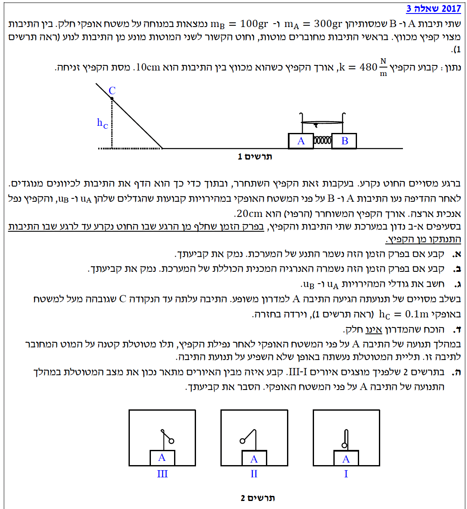
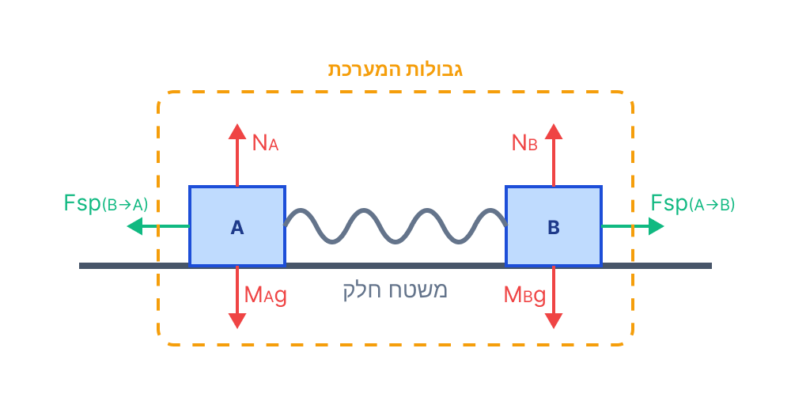
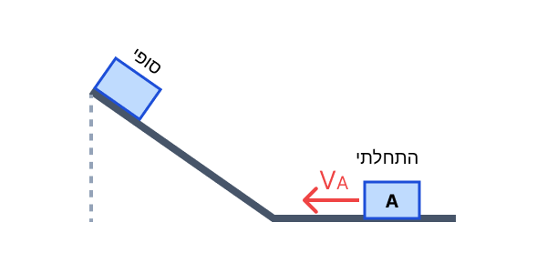
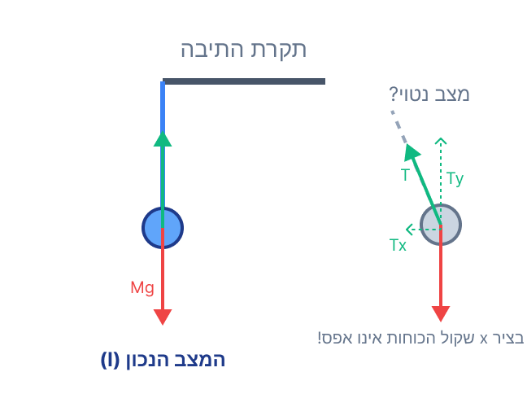

פתרון בגרות בפיזיקה - מכניקה 2017
שאלה 3: שימור תנע, עבודה ואנרגיה
פתרון מוסבר ופדגוגי, מודרך צעד-אחר-צעד
עודכן:
--- --:--:--
שלב מקדים: חילוץ נתונים והמרת יחידות (MKS)
לפני שנתחיל לפתור, נרכז את הנתונים המופיעים בפתיח השאלה ונדאג להמיר אותם ליחידות הסטנדרטיות (קילוגרם, מטר, שנייה):
- מסת תיבה א': \( m_A = 300\text{gr} = 0.300\text{kg} \)
- מסת תיבה ב': \( m_B = 100\text{gr} = 0.100\text{kg} \)
- קבוע הקפיץ: \( k = 480\text{N/m} \) (כבר ביחידות תקניות).
- אורך הקפיץ במצב מכווץ: \( l_{compressed} = 10\text{cm} = 0.100\text{m} \)
- אורך הקפיץ במצב רפוי: \( l_{relaxed} = 20\text{cm} = 0.200\text{m} \)
- התכווצות הקפיץ המקסימלית: \( \Delta l = l_{relaxed} - l_{compressed} = 0.200 - 0.100 = 0.100\text{m} \)
- תאוצת הכובד: נקבע ציר אנכי \( y \) כלפי מעלה וציר אופקי \( x \) ימינה. גודל תאוצת הכובד הוא \( g = 10\text{m/s}^2 \).

[תמונת השאלה המקורית]
לא נמצאה תמונה בשם question-image.png באותה תיקייה.
מה נתון: המשטח האופקי שעליו מונחות התיבות חלק (אין חיכוך). מוגדר פרק זמן מסוים: מהרגע שבו החוט נקרע (והתיבות מתחילות לנוע מנוחה) ועד לרגע שבו התיבות ניתקות מהקפיץ.
מה מחפשים: לקבוע ולנמק האם בפרק הזמן הזה נשמר התנע של המערכת (המורכבת מתיבה א', תיבה ב' והקפיץ).
נוסחאות ועקרונות בשימוש:
\(\Sigma\vec{F} = \frac{\Delta\vec{p}}{\Delta t}\)
חוק שימור התנע
החוק השני של ניוטון
העיקרון הפיזיקלי: תנע של מערכת גופים נשמר אם ורק אם שקול הכוחות החיצוניים הפועלים על המערכת באותו ציר הוא אפס.
הצבה ופתרון:
נסרטט תרשים כוחות (FBD) עבור המערכת בזמן שהקפיץ דוחף את התיבות:

[תרשים סעיף א']
לא נמצאה תמונה בשם image-1.png באותה תיקייה.
נבחן את הכוחות הפועלים על המערכת בציר האופקי (\( x \)):
- בציר האנכי, כוחות הכובד מאוזנים על ידי הכוחות הנורמליים מהמשטח ולכן אין תנועה בציר זה.
- הכוח האלסטי שמפעיל הקפיץ על תיבה A ועל תיבה B הוא כוח פנימי במערכת (נובע מאינטראקציה בין גופי המערכת לבין עצמם). על פי החוק השלישי של ניוטון, הכוחות שהקפיץ מפעיל שווים בגודלם ומנוגדים בכיוונם ולכן סכומם האלגברי מתאפס.
- כיוון שהמשטח חלק, אין כוח חיכוך (שהוא כוח חיצוני).
מכאן נובע כי שקול הכוחות החיצוניים בציר האופקי שווה לאפס:
\[ \Sigma F_{ext,x} = 0 \]
תשובה סופית: מכיוון ששקול הכוחות החיצוניים הפועלים על המערכת בציר האופקי שווה לאפס, התנע הכולל של המערכת בפרק הזמן הנתון נשמר.
טיפ מורה: שימו לב להבדל הקריטי בין כוח פנימי לכוח חיצוני! אם היינו מסתכלים רק על תיבה A כמערכת, אז כוח הקפיץ היה כוח חיצוני והתנע של תיבה A לבדה אינו נשמר (הרי גודל מהירותה גדל ממנוחה ל-\( u_A \)). רק בבחירת המערכת כולה (A+B+קפיץ) אנו מקבלים שימור תנע.
מה נתון: אותם תנאים כמו בסעיף א'. מערכת הכוללת קפיץ ושתי תיבות, ללא חיכוך עם המשטח.
מה מחפשים: לקבוע ולנמק האם בפרק הזמן הנתון נשמרה האנרגיה המכנית הכוללת של המערכת.
נוסחאות ועקרונות בשימוש:
\(W_{nc} = \Delta E\)
משפט עבודה-אנרגיה
העיקרון: אנרגיה מכנית נשמרת אם עבודת הכוחות הלא-משמרים (כגון חיכוך או כוח חיצוני) הפועלים על המערכת שווה לאפס.
הצבה ופתרון:
נבדוק אילו כוחות מבצעים עבודה על המערכת במהלך תנועת התיבות:
- כוח הכובד והכוח הנורמלי: פועלים בציר האנכי, המאונך לכיוון התנועה האופקי. לכן, הזווית בינם לבין ההעתק היא \( 90^\circ \). מאחר ו- \( \cos(90^\circ)=0 \), כוחות אלו אינם מבצעים עבודה.
- כוח חיכוך: לא קיים מכיוון שהמשטח חלק (\( f_k = 0 \)).
- כוח אלסטי של הקפיץ: זהו כוח משמר. העבודה שלו באה לידי ביטוי כהמרת אנרגיה פוטנציאלית אלסטית לאנרגיה קינטית.
מכיוון שעבודת כל הכוחות הלא-משמרים שווה לאפס (\( W_{nc} = 0 \)), השינוי באנרגיה המכנית הוא אפס (\( \Delta E = 0 \)).
תשובה סופית: האנרגיה המכנית הכוללת של המערכת נשמרת. אנרגיה פוטנציאלית אלסטית של הקפיץ מומרת במלואה לאנרגיה קינטית של שתי התיבות.
טיפ מורה: תמיד תשאלו את עצמכם בסעיפי שימור אנרגיה: "האם יש כאן גורם ש'גונב' אנרגיה מהמערכת (כמו חיכוך) או 'מוסיף' אנרגיה מבחוץ (כמו דחיפה של אדם)?". אם התשובה היא לא, והכוחות היחידים שמבצעים עבודה הם כוח הכובד או קפיץ, האנרגיה נשמרת!
מה נתון: הוכחנו שיש שימור תנע ושימור אנרגיה. המערכת מתחילה ממנוחה. הנתונים המספריים משלב 0: \( m_A = 0.300\text{kg} \), \( m_B = 0.100\text{kg} \), \( k = 480\text{N/m} \), \( \Delta l = 0.100\text{m} \).
מה מחפשים: לחשב את גודלי המהירויות של התיבות, \( u_A \) ו- \( u_B \), ברגע הניתוק מהקפיץ.
נוסחאות ועקרונות בשימוש:
\(m_A\vec{v}_A + m_B\vec{v}_B = m_A\vec{u}_A + m_B\vec{u}_B\)
\(E_k = \frac{1}{2}mv^2\)
\(U_{sp} = \frac{1}{2}k(\Delta l)^2\)
\(E_{initial} = E_{final}\)
הצבה ופתרון:
שלב 1: משוואת שימור התנע
נקבע את הכיוון ימינה כחיובי. המהירות ההתחלתית של שתי התיבות היא אפס, ולכן התנע ההתחלתי שווה לאפס. לאחר שהקפיץ משתחרר, תיבה B נעה ימינה (מהירות חיובית \( u_B \)) ותיבה A נעה שמאלה (מהירות שלילית \( -u_A \), כאשר \( u_A \) מייצג את גודל המהירות).
\[ 0 = m_A \cdot (-u_A) + m_B \cdot u_B \]
\[ m_A u_A = m_B u_B \]
נציב את המסות (ונסמן תוצאה זו כ-משוואה 1):
\[ 0.300 \cdot u_A = 0.100 \cdot u_B \]
\[ u_B = \frac{0.300}{0.100} u_A = 3u_A \]
שלב 2: משוואת שימור אנרגיה
האנרגיה ההתחלתית במערכת היא כולה אנרגיה פוטנציאלית אלסטית אגורה בקפיץ. האנרגיה הסופית היא האנרגיה הקינטית של שתי התיבות (הקפיץ רפוי ולכן האנרגיה שלו אפס, מסתו זניחה).
\[ U_{sp,i} = E_{k,f} \]
\[ \frac{1}{2}k(\Delta l)^2 = \frac{1}{2}m_A u_A^2 + \frac{1}{2}m_B u_B^2 \]
נחשב את האנרגיה ההתחלתית:
\[ E_i = \frac{1}{2} \cdot 480 \cdot (0.100)^2 = 240 \cdot 0.0100 = 2.40\text{J} \]
נציב במשוואת האנרגיה יחד עם התוצאה ממשוואה 1 (\( u_B = 3u_A \)):
\[ 2.40 = \frac{1}{2}(0.300)u_A^2 + \frac{1}{2}(0.100)(3u_A)^2 \]
\[ 2.40 = 0.150 u_A^2 + 0.050 (9u_A^2) \]
\[ 2.40 = 0.150 u_A^2 + 0.450 u_A^2 \]
\[ 2.40 = 0.600 u_A^2 \]
\[ u_A^2 = \frac{2.40}{0.600} = 4.00 \]
\[ u_A = 2.00\text{m/s} \]
כעת נמצא את \( u_B \) בעזרת משוואה 1:
\[ u_B = 3 \cdot 2.00 = 6.00\text{m/s} \]
תשובה סופית: גודל המהירות של תיבה א' הוא \( u_A = 2.00\text{m/s} \) וגודל המהירות של תיבה ב' הוא \( u_B = 6.00\text{m/s} \).
טיפ מורה: תופעה מעניינת! מכיוון שהתנע נשמר ואחת התיבות כבדה פי 3 מהשנייה, התיבה הקלה יותר "חוטפת" מהירות גדולה פי 3 כדי לאזן את התנע. זהו עיקרון שמופיע המון בבעיות של פיצוץ או רתע.
מה נתון: תיבה A נעה שמאלה ומגיעה למדרון, עולה עליו עד לנקודה C שגובהה \( h_C = 0.100\text{m} \) (שם היא נעצרת רגעית לפני הירידה). מהירותה בתחילת העלייה היא \( u_A = 2.00\text{m/s} \).
מה מחפשים: להוכיח שהמדרון אינו חלק (כלומר, קיים עליו כוח חיכוך).
נוסחאות ועקרונות בשימוש:
\(E_k = \frac{1}{2}mv^2\)
\(U_G = mgh\)
\(W_{nc} = \Delta E\)
אסטרטגיית הוכחה: נניח בשלילה שהמדרון חלק, כלומר האנרגיה המכנית צריכה להישמר. נחשב את האנרגיה בתחתית המדרון ובשיאו, ונראה אם הן שוות. אם אינן שוות, ההנחה שגויה ויש עבודת חיכוך.
הצבה ופתרון:
נחשב את האנרגיה המכנית של תיבה A רגע לפני העלייה למדרון (קבענו את גובה המשטח האופקי כ- \( h=0 \)):
\[ E_1 = E_k = \frac{1}{2}m_A u_A^2 = \frac{1}{2} \cdot 0.300 \cdot (2.00)^2 = 0.600\text{J} \]
נחשב את האנרגיה המכנית של תיבה A בנקודה C (בשיא הגובה גודל המהירות הוא אפס, ולכן יש רק אנרגיה פוטנציאלית כובדית):
\[ E_2 = U_G = m_A g h_C = 0.300 \cdot 10 \cdot 0.100 = 0.300\text{J} \]

[תרשים סעיף ד']
לא נמצאה תמונה בשם image-4.png באותה תיקייה.
אנו רואים כי \( E_2 < E_1 \). כלומר, האנרגיה המכנית לא נשמרה. נחשב את עבודת הכוחות הלא משמרים:
\[ W_{nc} = \Delta E = E_2 - E_1 = 0.300 - 0.600 = -0.300\text{J} \]
מכיוון שעבודת הכוחות הלא משמרים שלילית ואינה אפס, חייב לפעול כוח לא משמר המבצע עבודה שלילית. כוח זה הוא כוח החיכוך הקינטי המנוגד לכיוון התנועה.
תשובה סופית: הראינו כי האנרגיה בשיא הגובה (\( 0.300\text{J} \)) קטנה מהאנרגיה בתחילת העלייה (\( 0.600\text{J} \)). אובדן אנרגיה מכנית זו מוכיח שפעל כוח חיכוך ולכן המדרון אינו חלק.
טיפ מורה: שיטת "הנחה בשלילה" חזקה מאוד בפיזיקה. במקום לחפש ישירות את כוח החיכוך, הראינו שמשהו "נשבר" בחוקי הפיזיקה אם נניח שהוא לא שם. חסרה לנו חצי מהאנרגיה! לאן היא נעלמה? לחום הנוצר מהחיכוך.
מה נתון: במהלך תנועת התיבה A על המשטח האופקי (לאחר התנתקות הקפיץ ולפני המדרון), תלויה בה מטוטלת. משקולת המטוטלת אינה משפיעה על תנועת התיבה. התיבה נעה במשטח אופקי חלק.
מה מחפשים: לקבוע איזה מבין האיורים I, II או III מתאר נכון את מצב המטוטלת במהלך התנועה על המשטח האופקי.
נוסחאות ועקרונות בשימוש:
\(\Sigma\vec{F} = 0 \Rightarrow \vec{v} = \text{const}\)
החוק הראשון של ניוטון (התמדה)
ניתוח כוחות פשוט: נמצא את תאוצת התיבה, וממנה נסיק לגבי משקולת המטוטלת.
הצבה ופתרון:
לאחר הניתוק מהקפיץ, תיבה A נעה על משטח אופקי חלק. בציר האופקי, שקול הכוחות הפועל עליה הוא אפס (\( \Sigma F_{x,A} = 0 \)). לפי החוק הראשון של ניוטון, התיבה מתמידה בתנועתה וגודל מהירותה קבוע. כלומר, תאוצת התיבה היא אפס (\( a_A = 0 \)).
משקולת המטוטלת תלויה בתוך התיבה ולכן היא נעה יחד איתה באותה תאוצה. כלומר, גם תאוצת המשקולת בציר האופקי היא אפס (\( a_x = 0 \)).
נשרטט תרשים כוחות למשקולת המטוטלת, תחת ההנחה שהחוט נטוי בזווית כלשהי (כמו באיורים II ו-III):

[תרשים סעיף ה']
לא נמצאה תמונה בשם image-5.png באותה תיקייה.
הכוחות הפועלים על המשקולת הם כוח הכובד (\( mg \)) כלפי מטה, וכוח המתיחות בחוט (\( T \)) לאורך החוט. אם החוט היה נטוי, לרכיב האופקי של המתיחות (\( T_x \)) לא היה כוח שיאזן אותו, ולכן, לפי החוק השני של ניוטון, הייתה צריכה להיות למשקולת תאוצה אופקית. אך הוכחנו שאין תאוצה!
\[ \Sigma F_x = m a_x \]
\[ T_x = m \cdot 0 = 0 \]
הדרך היחידה שבה הרכיב האופקי של המתיחות הוא אפס היא אם החוט אנכי לחלוטין. במצב זה, כוח המתיחות מאזן בדיוק את כוח הכובד (\( T = mg \)), ושקול הכוחות מתאפס בכל הצירים, כנדרש להתמדה של המערכת.
תשובה סופית: איור I הוא המתאר נכון את מצב המטוטלת. מכיוון שהתיבה נעה במהירות קבועה (תאוצה אפס), גם המטוטלת אינה מאיצה, ולכן אין שום כוח אופקי שפועל עליה ומוציא אותה משיווי משקלה האנכי.
טיפ מורה: קל להתבלבל ולחשוב שאם התיבה נעה מהר, המטוטלת תעוף אחורה (כמו באיור III). תופעה כזו קורית רק כשיש תאוצה (למשל, כשהרכב מאיץ ברמזור ירוק). כאשר המהירות קבועה, החוק הראשון של ניוטון אומר לנו ששקול הכוחות שווה לאפס (ממש כמו במנוחה). לכן המטוטלת "תרגיש" בדיוק כמו שהייתה מרגישה במנוחה – תלויה ישר למטה בשיווי משקל!